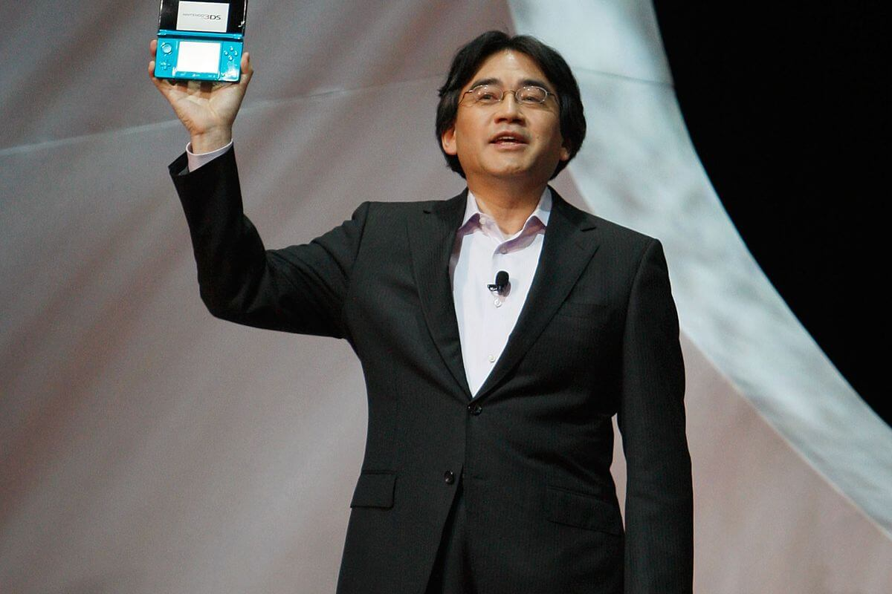

Satotu Iwata
El hombre que dirigió los videojuegos a un público más amplio

Aquí hay una línea de tiempo de la vida del Satoru Iwata:
- 1959 - Nacido en Sapporo, Japón.
- 1980 - Cuando todavía estaba en la universidad, comenzó a trabajar como desarrollador de videojuegos en la HAL Laboratoty, trabajando como programador en proyectos de colaboración con Nintendo.
- 1983 - Produce su primer videojuego comercial.
- 1993 - Se convirtio en el presidente de HAL Laboratory.
- 2000 - Se unió a Nintendo como jefe de la división de estrategia corporativa.
- 2002 - Sucedió a Hiroshi Yamauchi como presidente de Nintendo.
- 2009 - Hizo que Nintendo obtuviera beneficios récord, lo que hizo que el semanario Barron´s lo incluyera entre los 30 directores ejecutivos con más exito del mundo.
- 2015 - Fallece a la edad de 55 años.
"En mi tarjeta de visita, soy un presidente de empresa. En mi mente soy un programador de juegos. Pero en mi corazón soy un jugador."
-- Satoru Iwata